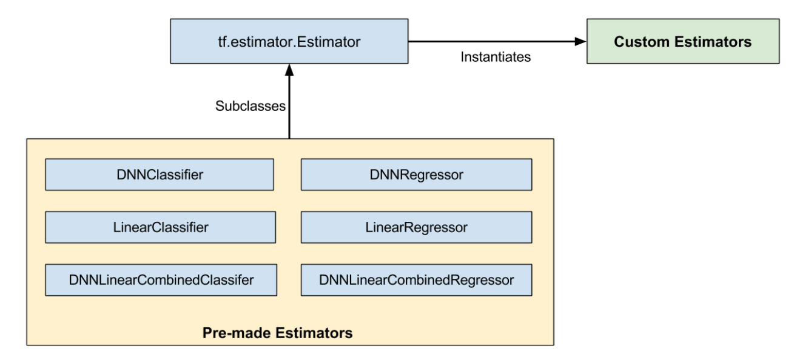

6.6 tf.estimator使用入门
学习目标
- 目标
- 知道tf.estimator的使用流程
- 了解什么是premade estimator
- 应用
- 应用tf.estimator完成美国普查数据的二分类
6.6.1 tf.estimator介绍
TensorFlow 中的 tf.estimator API 封装了基础的机器学习模型。Estimator 是可扩展性最强且面向生产的 TensorFlow 模型类型。
本文档介绍了 Estimator - 一种可极大地简化机器学习编程的高阶 TensorFlow API。Estimator 会封装下列操作：
- 训练
- 评估
- 预测
- 导出以供使用
Estimator 的优势
Estimator 具有下列优势：
- 您可以在本地主机上或分布式多服务器环境中运行基于 Estimator 的模型，而无需更改模型。此外，您可以在 CPU、GPU 或 TPU 上运行基于 Estimator 的模型，而无需重新编码模型。
- Estimator 简化了在模型开发者之间共享实现的过程。
- 您可以使用高级直观代码开发先进的模型。简言之，采用 Estimator 创建模型通常比采用低阶 TensorFlow API 更简单。
- Estimator 本身在
tf.layers之上构建而成，可以简化自定义过程。 - Estimator 会为您构建图。
- Estimator 提供安全的分布式训练循环，可以控制如何以及何时：
- 构建图
- 初始化变量
- 开始排队
- 处理异常
- 创建检查点文件并从故障中恢复
- 保存 TensorBoard 的摘要
使用 Estimator 编写应用时，您必须将数据输入管道从模型中分离出来。这种分离简化了不同数据集的实验流程。
预创建的 Estimator
借助预创建的 Estimator，您能够在比基本 TensorFlow API 高级很多的概念层面上进行操作。由于 Estimator 会为您处理所有“管道工作”，因此您不必再为创建计算图或会话而操心。也就是说，预创建的 Estimator 会为您创建和管理 Graph 和 Session 对象。此外，借助预创建的 Estimator，您只需稍微更改下代码，就可以尝试不同的模型架构。例如，DNNClassifier 是一个预创建的 Estimator 类，它根据密集的前馈神经网络训练分类模型。
预创建的 Estimator 程序的结构
依赖预创建的 Estimator 的 TensorFlow 程序通常包含下列四个步骤：
编写一个或多个数据集导入函数。 例如，您可以创建一个函数来导入训练集，并创建另一个函数来导入测试集。每个数据集导入函数都必须返回两个对象：
- 一个字典，其中键是特征名称，值是包含相应特征数据的张量（或 SparseTensor）
- 一个包含一个或多个标签的张量
例如，以下代码展示了输入函数的基本框架：
def input_fn(dataset): ... # manipulate dataset, extracting the feature dict and the label return feature_dict, label（要了解完整的详细信息，请参阅导入数据。）
定义特征列。 每个
tf.feature_column都标识了特征名称、特征类型和任何输入预处理操作。例如，以下代码段创建了三个存储整数或浮点数据的特征列。前两个特征列仅标识了特征的名称和类型。第三个特征列还指定了一个 lambda，该程序将调用此 lambda 来调节原始数据：# Define three numeric feature columns. population = tf.feature_column.numeric_column('population') crime_rate = tf.feature_column.numeric_column('crime_rate') median_education = tf.feature_column.numeric_column('median_education', normalizer_fn=lambda x: x - global_education_mean)实例化相关的预创建的 Estimator。 例如，下面是对名为
LinearClassifier的预创建 Estimator 进行实例化的示例代码：# Instantiate an estimator, passing the feature columns. estimator = tf.estimator.LinearClassifier( feature_columns=[population, crime_rate, median_education], )调用训练、评估或推理方法。例如，所有 Estimator 都提供训练模型的
train方法。# my_training_set is the function created in Step 1estimator.train(input_fn=my_training_set, steps=2000)
6.6.1.1 Premade Estimators
pre-made Estimators是基类tf.estimator.Estimator的子类，而定制的estimators是tf.estimator.Estimator的实例：

pre-made Estimators是已经做好的。但有时候，你需要对一个Estimator的行为做更多控制。这时候就需要定制Estimators了。你可以创建一个定制版的Estimator来做任何事。如果你希望hidden layers以某些不常见的方式进行连接，可以编写一个定制的Estimator。如果你想为你的模型计算一个唯一的metric，可以编写一个定制的Estimator。基本上，如果你想为特定的问题进行优化，你可编写一个定制的Estimator。
6.6.2 案例：使用美国普查数据分类
1994 年和 1995 年的美国普查收入数据集。解决的是二元分类问题，目标标签为：如果收入超过 5 万美元，则该值为 1；否则，该值为 0。
- 'train': 32561
- 'validation': 16281
| age | workclass | fnlwgt | education | education_num | marital_status | occupation | relationship | race | gender | capital_gain | capital_loss | hours_per_week | native_country | income_bracket | |
|---|---|---|---|---|---|---|---|---|---|---|---|---|---|---|---|
| 0 | 39 | State-gov | 77516 | Bachelors | 13 | Never-married | Adm-clerical | Not-in-family | White | Male | 2174 | 0 | 40 | United-States | <=50K |
| 1 | 50 | Self-emp-not-inc | 83311 | Bachelors | 13 | Married-civ-spouse | Exec-managerial | Husband | White | Male | 0 | 0 | 13 | United-States | <=50K |
| 2 | 38 | Private | 215646 | HS-grad | 9 | Divorced | Handlers-cleaners | Not-in-family | White | Male | 0 | 0 | 40 | United-States | <=50K |
| 3 | 53 | Private | 234721 | 11th | 7 | Married-civ-spouse | Handlers-cleaners | Husband | Black | Male | 0 | 0 | 40 | United-States | <=50K |
| 4 | 28 | Private | 338409 | Bachelors | 13 | Married-civ-spouse | Prof-specialty | Wife | Black | Female | 0 | 0 | 40 | Cuba | <=50K |
这些列分为两类 - 类别列和连续列：
- 如果某个列的值只能是一个有限集合中的类别之一，则该列称为类别列。例如，婚恋状况（妻子、丈夫、未婚等）或受教育程度（高中、大学等）属于类别列。
- 如果某个列的值可以是连续范围内的任意数值，则该列称为连续列。例如，一个人的资本收益（如 14084 美元）属于连续列。
6.6.2.1 案例实现
- 目的：对普查收入数据进行二分类预测
- 步骤：
- 1、读取美国普查收入数据
- 2、模型选择特征并进行特征工程处理
- 3、模型训练与评估
1、读取美国普查收入数据
tf.data API可以很方便地以不同的数据格式处理大量的数据，以及处理复杂的转换。
- 读取csv文件接口：tf.data.TextLineDataset()
- 路径+文件名称列表
- 返回：Dataset结构
本地数据文件，adult.data以及adult.test
读取的相关设置
_CSV_COLUMNS = [
'age', 'workclass', 'fnlwgt', 'education', 'education_num',
'marital_status', 'occupation', 'relationship', 'race', 'gender',
'capital_gain', 'capital_loss', 'hours_per_week', 'native_country',
'income_bracket'
]
_CSV_COLUMN_DEFAULTS = [[0], [''], [0], [''], [0], [''], [''], [''], [''], [''],
[0], [0], [0], [''], ['']]
train_file = "/root/toutiao_project/reco_sys/server/models/data/adult.data"
test_file = "/root/toutiao_project/reco_sys/server/models/data/adult.test"
输入函数代码
def input_fn(data_file, num_epochs, shuffle, batch_size):
def parse_csv(value):
columns = tf.decode_csv(value, record_defaults=_CSV_COLUMN_DEFAULTS)
features = dict(zip(_CSV_COLUMNS, columns))
labels = features.pop('income_bracket')
classes = tf.equal(labels, '>50K')
return features, classes
# 读取csv文件
dataset = tf.data.TextLineDataset(data_file)
dataset = dataset.map(parse_csv)
dataset = dataset.repeat(num_epochs)
dataset = dataset.batch(batch_size)
return dataset
2、模型选择特征并进行特征工程处理
Estimator 使用名为特征列的机制来描述模型应如何解读每个原始输入特征。Estimator 需要数值输入向量，而特征列会描述模型应如何转换每个特征。
选择和创建一组正确的特征列是学习有效模型的关键。特征列可以是原始特征 dict 中的其中一个原始输入（基准特征列），也可以是对一个或多个基准列进行转换而创建的任意新列（衍生特征列）。
特征列是一个抽象概念，表示可用于预测目标标签的任何原始变量或衍生变量。
- 数值列
最简单的 feature_column 是 numeric_column。它表示特征是数值，应直接输入到模型中。例如：
age = tf.feature_column.numeric_column('age')
education_num = tf.feature_column.numeric_column('education_num')
capital_gain = tf.feature_column.numeric_column('capital_gain')
capital_loss = tf.feature_column.numeric_column('capital_loss')
hours_per_week = tf.feature_column.numeric_column('hours_per_week')
numeric_columns = [age, education_num, capital_gain, capital_loss, hours_per_week]
- 类别列
要为类别特征定义特征列，请使用其中一个 tf.feature_column.categorical_column* 函数创建 CategoricalColumn。如果您知道某个列的所有可能特征值的集合，并且集合中只有几个值，请使用 categorical_column_with_vocabulary_list。列表中的每个键会被分配自动递增的 ID（从 0 开始）。例如，对于 relationship 列，我们可以将整数 ID 0 分配给特征字符串 Husband，将 1 分配给“Not-in-family”，以此类推。
relationship = tf.feature_column.categorical_column_with_vocabulary_list(
'relationship',
['Husband', 'Not-in-family', 'Wife', 'Own-child', 'Unmarried', 'Other-relative'])
occupation = tf.feature_column.categorical_column_with_hash_bucket(
'occupation', hash_bucket_size=1000)
education = tf.feature_column.categorical_column_with_vocabulary_list(
'education', [
'Bachelors', 'HS-grad', '11th', 'Masters', '9th', 'Some-college',
'Assoc-acdm', 'Assoc-voc', '7th-8th', 'Doctorate', 'Prof-school',
'5th-6th', '10th', '1st-4th', 'Preschool', '12th'])
marital_status = tf.feature_column.categorical_column_with_vocabulary_list(
'marital_status', [
'Married-civ-spouse', 'Divorced', 'Married-spouse-absent',
'Never-married', 'Separated', 'Married-AF-spouse', 'Widowed'])
workclass = tf.feature_column.categorical_column_with_vocabulary_list(
'workclass', [
'Self-emp-not-inc', 'Private', 'State-gov', 'Federal-gov',
'Local-gov', '?', 'Self-emp-inc', 'Without-pay', 'Never-worked'])
categorical_columns = [relationship, occupation, education, marital_status, workclass]
4、模型训练与评估
输入到train当中的train_inpf只是将函数名称放入，如要将原先的input_fn中参数进行取出。可以使用该方法functools.partial方法
import functools
def add(a, b):
return a + b
add(4, 2)
6
plus3 = functools.partial(add, 3)
plus5 = functools.partial(add, 5)
plus3(4)
7
plus3(7)
10
plus5(10)
15
partial方法使用在数据集
import functools
train_inpf = functools.partial(input_fn, train_file, num_epochs=2, shuffle=True, batch_size=64)
test_inpf = functools.partial(input_fn, test_file, num_epochs=1, shuffle=False, batch_size=64)
tf.estimator进行初始化训练评估：
classifier = tf.estimator.LinearClassifier(feature_columns=numeric_columns + categorical_columns)
classifier.train(train_inpf)
result = classifier.evaluate(test_inpf)
# result是一个字典格式，里面包含评估指标
for key, value in sorted(result.items()):
print('%s: %s' % (key, value))